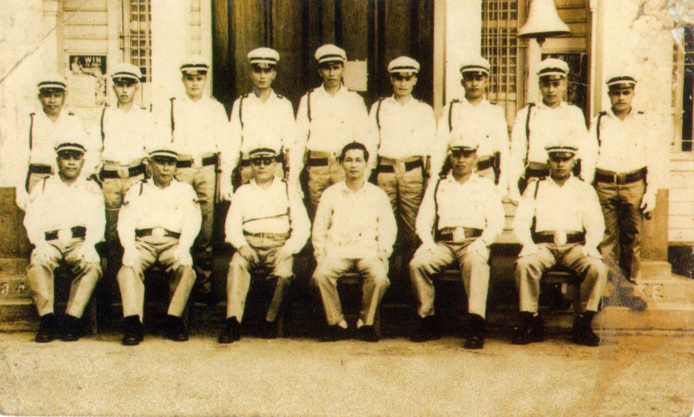
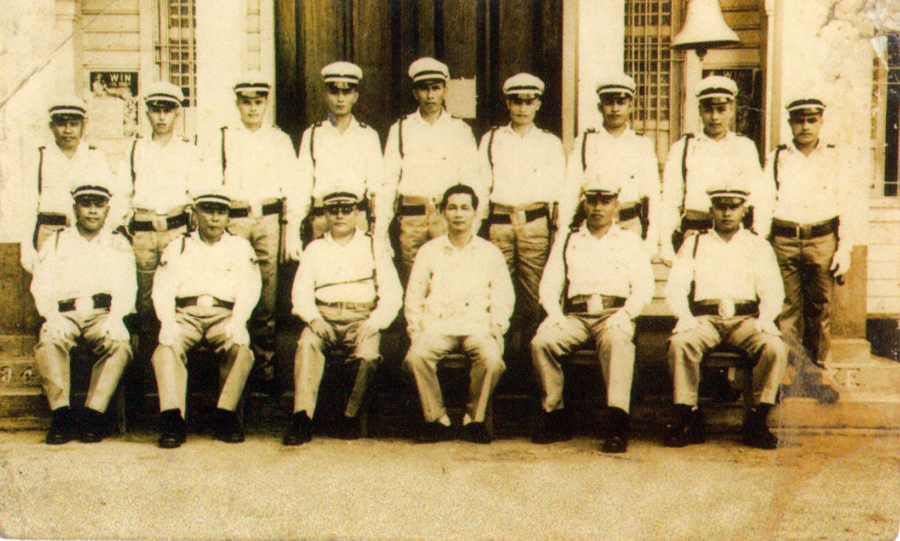

Local lore has come up with several versions on how the name "Tangub" came about, but all of these stories carry one common thread: the name originated from the word "tangkub," the local name for rice baskets made of rattan strips that the Subanens carried on their backs.
One such version tells us of lost Spanish soldiers who chanced upon a Subanen couple. Asked what the name of the place was, the couple replied, "Tangkub", thinking they were asked what they were carrying. "Tangkub" later became "Tangub" giving name to the frontier town in Panguil Bay.
Murillo de Velarde map of 1750 showing the island of Mindanao
Subanen of Misamis Occidental
The chain of events that led to the creation of Tangub as a city started in 1929, some sixty-four years ago, when i t became a municipality by virtue of an executive order by American Go vernor-General Dwight Davis.
The then Municipality of Tangub saw an influx of migrants at the beginning of the American Occupation. With the peopling of the Tangub grew a sense of community. In the late 1920s, a movement to secure socio-economic and political independence for Tangub was born. It was forged by a group of community leaders who called themselves the Aspiracion Committee. This committee began their valiant efforts to make Tangub an independent Municipality from Misamis. The efforts of the Aspiracion Committee were not in vain. On December 4, 1929, Governor-General Dwight F. Davis issued executive Order No. 220 creating the municipality of Regidor -- named in honor of Dr. Antonio Ma. Regidor, one of the Filipino leaders who participated in the Reform Movement during the Spanish regime -- with the seat of government in the barrio of Tangub.

Aspiracion Committee. From left seated: Eusebio Kaamiño, Hilarion Guevarra (Treasurer), Pastor Ocampos (President), Leocadio Ocampos (Secretary), Timoteo Engracia, Paulino Magallanes. From left standing: Vicente Astillero, Felipe Berioso, Marciano Balatero
 

A public gathering in the late 1950s
Tangub Police Force in the late 50s
On June17, 1967 Tangub was chartered as a city under Republic Act No. 5131 and became the 3rd component city of the Province of Misamis Occidental, and the 50th city in the Philippines. The city was formally inaugurated on February 28, 1968.